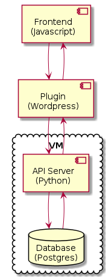

Meta Search¶
Description of the meta search widget.
Metadata Extraction¶
We extract the metadata from the manuscript files and store them in the Postgres database on the Capitularia VM. The process is similar to the pre-processing done for the Collation Tool.
![skinparam backgroundColor transparent
skinparam DefaultTextAlignment center
skinparam componentStyle uml2
database "Manuscript files\n(XML+TEI)" as tei
note left of tei: AFS:publ/mss/*.xml
cloud "VM" {
component "corpus.xsl" as saxon
database "corpus.xml\n(XML+TEI)" as corpus
component "import.py" as import
database "Database\n(Postgres)" as db
component "Makefile" as make
component "Cron" as cron
note left of corpus: AFS:publ/cache/lists/
}
tei --> saxon
saxon --> corpus
corpus --> import
import --> db
cron .> make
make .> saxon
make .> import](../_images/plantuml-7328b0c7251de941a73aa19787156cc0fd222245.png)
Data flow during metadata extraction
The Makefile is run by cron on the Capitularia VM at regular intervals.
The manuscript files are in the AFS. The AFS is mounted onto the VM.
The Makefile knows all the dependencies between the files and runs the appropriate tools to keep the database up-to-date with the manuscript files.
The internediate corpus.xml file contains all (useful) metadata from all manuscript file but no text. The corpus.xml file can be found in the cache/lists directory.
The import.py script scans the corpus.xml file and imports the all metadata it finds into the database.
Fulltext Extraction¶
The TEI files are already pre-processed as described under Collation Tool and the plain text of every chapter is stored in the database.
Search¶
To get good full text search results in the absence of orthography, all full text search is done by similarity. The plain text of the chapters is split into trigrams and the trigrams are indexed.
The Meta Search Wordpress plugin sends the search query to the application server, which does the actual search. The app server finds the chapters and the ids of the manuscripts but it doesn’t know which Wordpress pages contain the text of those manuscripts. The plugin finds the pages in the Wordpress database using the manuscript ids and sends the search results page to the user.

Data flow meta search